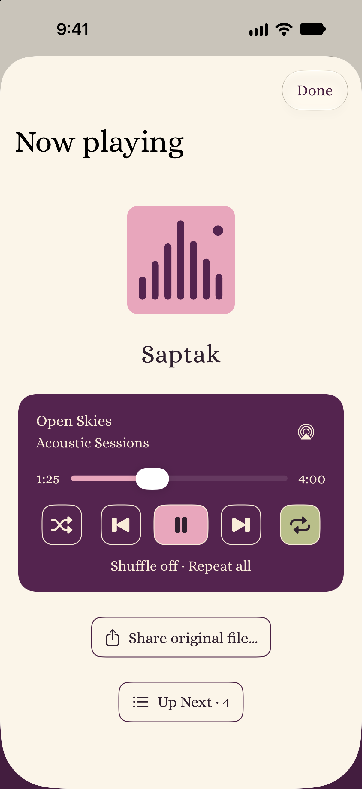
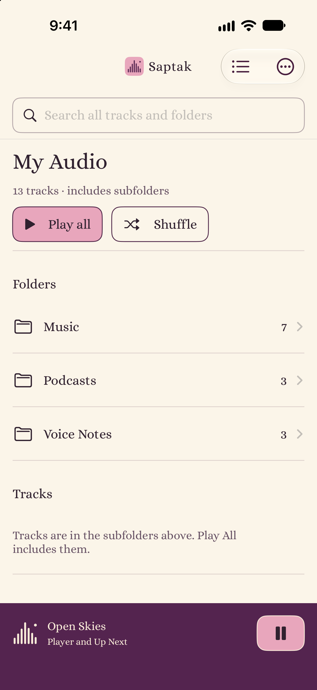
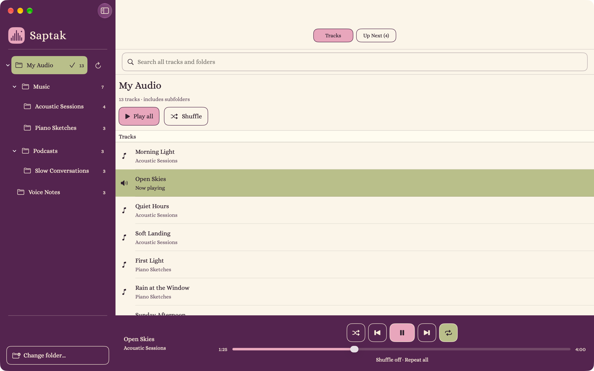

Keep your files
Listen directly from your chosen folders. No permanent copies in a proprietary library, and no edits to your originals.
Made for iPhone, iPad & Mac
Music, podcasts, voice notes. The things you collect, create and come back to. Play them straight from your folders, without handing them over to another library.
No account. No subscription. No permanent imports.
Open-source. MIT-licensed.

A familiar place for your audio
Saptak is a privacy-first audio player for iPhone, iPad and Mac. It plays music, podcasts and voice notes directly from a folder you choose. Each folder is a playlist, and parent folders can include tracks from their subfolders. Your original files stay in place.
Saptak starts there.
Choose a folder and start listening. Every folder is a playlist. Play a whole collection, including its subfolders, or settle into one small corner of it.
Add or remove files as you normally would. Refresh Saptak and your library follows along. Your originals stay where you keep them.
Listen directly from your chosen folders. No permanent copies in a proprietary library, and no edits to your originals.
No Saptak account, analytics, advertising or application backend. Your listening doesn’t need an audience.
MIT-licensed and built with native Apple tools. Keep control of your audio and the freedom to inspect, modify and share the player.
A closer look
Your own music, a saved conversation, an idea worth keeping. They all have a place here.

Move through your hierarchy. Play a folder and everything inside it.
Seek, shuffle, repeat, check Up Next, or share the original file.

A folder sidebar, your tracks, and a player that stays within reach.
Actual app screens with fictional sample audio. Interface may change during development.
The everyday essentials
Search track and folder names throughout your selected library. See the folder paths that put each result in context.
Your last queue and playback position are saved locally. Reopen the app and press Play to continue when your folder is available.
Control playback from the Lock Screen and Control Center on iPhone, or use media keys on Mac. Send audio through AirPlay using native Apple controls.
Use local folders, iCloud Drive, or other locations available through Files or Finder. Folder access depends on the provider; cloud downloads can use device storage.
Still taking shape
Saptak is in development, with beta testing through Apple TestFlight. A public download isn’t available yet.
Designed for iOS 16 or later and macOS 13 or later. Saptak is open-source under the MIT license.
Already testing? Send feedback through TestFlight. Please keep private audio and personal file details out of screenshots you share.
Before you press Play
Saptak plays supported audio files directly from a folder you select in Files. You do not need to upload them to a music service or import them into a permanent Saptak library. The app is currently in beta; a public download is not available yet.
You can select an iCloud Drive folder through Apple's native folder picker. Files must be accessible to your device, and cloud-only files may need to download before playing. Other Files or Finder providers depend on their folder-access support.
Choose one top-level audio folder. Its subfolders keep their hierarchy, and each folder acts as a playlist. Play all includes audio in the selected folder and its descendants. Refresh updates the browser after files change; start playback again to use the refreshed playlist.
Yes. Saptak can play supported audio files you already have, including exported voice notes and saved podcast recordings. It does not subscribe to podcast feeds or provide a music catalog. Playback depends on the file's codec, container and your operating system.
Saptak opens originals read-only and does not permanently import them. Operating-system cloud downloads can use storage. When you explicitly share a file, the system or destination may create an export copy or upload it.
Saptak is in development with testing through TestFlight. There is no public App Store or beta signup link yet. It is designed for iOS 16 or later and macOS 13 or later; Saptak is open-source under the MIT license.
Independent, by design
If the idea of audio without lock-in resonates with you, you can support Saptak’s development with an optional coffee.
Buy me a coffeeA little support. No subscription required.